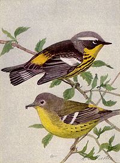
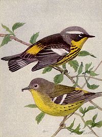

| Magnolia Warbler | |
|---|---|
|  | |
| Adult and Immature Male. | |
| Conservation status | |
| Binomial name | |
| Dendroica magnolia (Wilson, 1811) |
|
| Synonyms | |
|
Dendroica maculosa |
| Magnolia Warbler | |
|---|---|
|  | |
| Adult and Immature Male. | |
| Conservation status | |
| Binomial name | |
| Dendroica magnolia (Wilson, 1811) |
|
| Synonyms | |
|
Dendroica maculosa |
The Magnolia Warbler, Dendroica magnolia , is a New World warbler. It breeds across most of Canada as well as New England and the Great Lakes region of the U.S.
It is migratory, wintering in Central America. This species is a very rare vagrant to western Europe.
The summer male Magnolia Warbler is unmistakable in appearance. It has a black back and face with a white supercilium and gray crown. The underparts and rump are yellow, and the breast band is black. The flanks are streaked with black and there is a white wing patch.
Other plumages are essentially gray above and yellow below, with the flank streaking reduced or absent, but there are always two white wing bars. Young birds may have a brown back.
The breeding habitat is coniferous woodland. Magnolia Warblers nest in a young conifer, laying 3-5 eggs in a flimsy cup nest. Both parents feed the young.
These birds feed on insects and spiders, often found while foraging low in shrubs. The birds will hover while tracking prey. They sometimes eat berries in stormy weather, when their preferred food is scarce.
The song is a weety weety wee. The call is a soft ship.
The first bird seen by Wilson happened to be in a magnolia tree which gave this bird its common name.

{kind=link}
{kind=link}